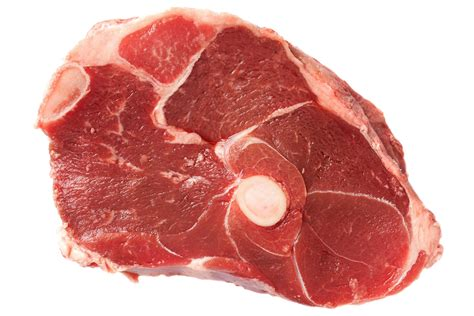

Boiled Meat

Tender beef chopping
Ingredients
- 1 corned beef brisket with spice packet (3 pounds)
- 1 teaspoon whole black peppercorns
- 2 bay leaves
- 2 medium potatoes, peeled and quartered
- 3 medium carrots, quartered
- 1 medium onion, cut into 6 wedges
- 1 small head green cabbage, cut into 6 wedges
- Optional: Prepared horseradish or mustard
Steps
- Place the brisket and contents of spice packet in a Dutch oven. Add the peppercorns, bay leaves and enough water to cover; bring to a boil. Reduce heat; cover and simmer for 2 hours or until meat is almost tender.
- Add potatoes, carrots and onion; bring to a boil. Reduce heat; cover and simmer for 10 minutes. Add cabbage, cover and simmer for 15-20 minutes or until tender. Discard bay leaves and peppercorns. Thinly slice meat; serve with vegetables and, if desired, horseradish or mustard.